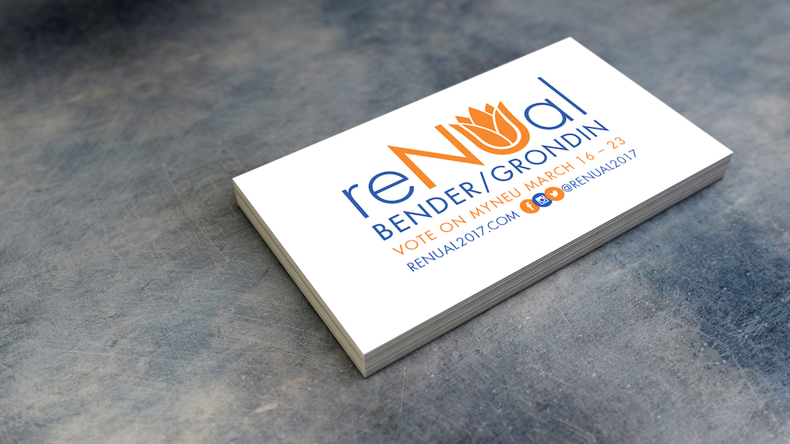
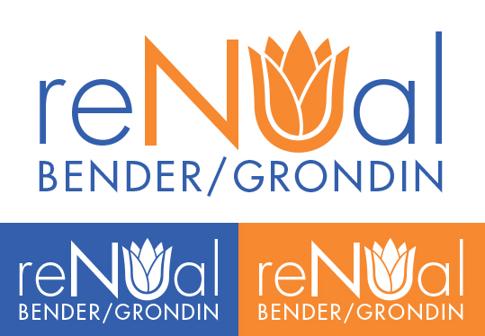

ReNUal Campaign
2017, for Bender/Grondin: ReNUal
I was asked to be one of the two design leads for my friends' campaign for Northeastern student body president and vice president.
That entailed designing their logo, business cards, and
campaign platform document.
I also helped design flyers and content for their social media pages.

Their campaign was focused around rejuvenating a number of Northeastern's current practices and streamlining a lot of services.
With this in mind, the design team and I came up with the idea for a flower in the logo.
After a lot of attempts, we came up with a logo that has a sleek look and is recognizable as both the name ReNUal and a flower.